Discos de escombros y el ensamblaje del Sistema Solar
Cuando el gas se acaba, quedan las rocas: cinturones de planetesimales esculpidos por resonancias con planetas gigantes, colisiones que fabrican polvo fresco, embriones que crecen a golpes… y la Luna como recuerdo del último gran impacto.
Un disco protoplanetario no dura para siempre: la propia estrella lo evapora con su radiación ultravioleta. Cuando el gas desaparece, se cierra la fábrica de gigantes gaseosos y comienza otra etapa: el disco de escombros, un mar de rocas de milímetros a kilómetros donde los planetas rocosos siguen creciendo a punta de choques. Esta clase recorre esa etapa completa: qué es un disco de escombros y por qué no tiene granos pequeños, cómo los cinturones de asteroides y de Kuiper (y sus versiones «exo») delatan a los planetas que los esculpen, cómo crecen los planetas telúricos por enfocamiento gravitacional e impactos gigantes, y cómo el Grand Tack y el modelo de Niza explican —de paso— el agua de la Tierra y el origen de la Luna. El profesor advirtió que dos clases previas (cinemática de discos y geometrías extremas) quedaron comprimidas: aquí se señala brevemente ese material al final.
El fin del gas: fotoevaporación del disco
La estrella que el disco alimentó termina destruyéndolo.
Recordemos el punto de partida (clases anteriores): la estrella crece por acreción magnetosférica — el campo magnético trunca el disco interno, el material cae siguiendo las líneas de campo e impacta la superficie estelar. Ese choque de acreción calienta el material a ~10.000 K y emite en el ultravioleta. Y aquí se cierra un círculo irónico: esa misma radiación UV es capaz de disociar el hidrógeno molecular del disco, e incluso ionizarlo.
- La radiación UV estelar calienta el gas de la superficie del disco.
- Cuando la temperatura sube, la velocidad térmica de las partículas puede superar la velocidad de escape — la misma idea que lanzar una roca lo bastante rápido como para que abandone la Tierra.
- Los átomos que superan esa velocidad se van del sistema: es el flujo fotoevaporativo.
- En paralelo, los granos crecen, sedimentan al plano medio y sufren deriva radial, lo que hace aún más eficiente la disipación del gas.
- Cuando queda poco gas, las regiones internas pierden su «escudo»: la radiación estelar ataca incluso las zonas densas cercanas y el disco se barre por completo.
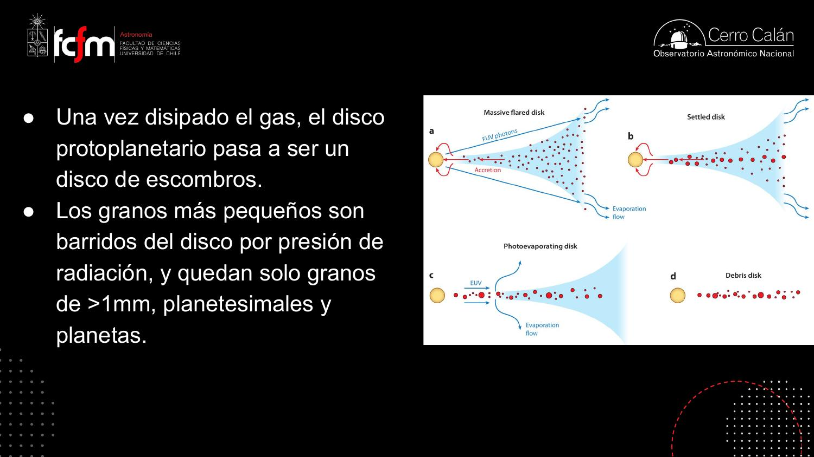
Según la clase, ese barrido final del gas es rapidísimo comparado con la vida del disco (millones de años). La transcripción dice «del orden de 100 a 1000 años»; el valor exacto es dudoso por posible error de reconocimiento de voz (la literatura suele citar ~105 años para el aclarado por fotoevaporación), pero el mensaje central es inequívoco: comparado con la vida del disco, es un parpadeo.
La consecuencia más importante: sin gas no se forman más gigantes gaseosos. Se acabó el periodo de formación de gigantes. Lo que sigue —la formación de planetas rocosos— ocurre en la etapa del disco de escombros.
La fotoevaporación es un proceso con umbral: mientras el disco es denso, se autoprotege (las capas externas absorben el UV); bajo cierta densidad crítica, la protección falla y el sistema colapsa rápido. Es la dinámica típica de un sistema con retroalimentación positiva pasado un umbral — como una caché que amortigua carga hasta que el hit-rate cae bajo el punto crítico y el backend se desploma en cascada.
Qué es un disco de escombros
Solo sobreviven los grandes: la presión de radiación barre el resto.
Una vez disipado el gas, el disco protoplanetario pasa a ser un disco de escombros (debris disk): solo quedan granos de más de ~1 mm, planetesimales y planetas. ¿Y dónde quedaron los granos de ~1 micrón, los responsables de reflejar la luz visible e infrarroja en los discos jóvenes?
La presión de radiación barre los granos pequeños
La luz lleva momentum. Cuando un granito absorbe fotones, es como recibir pelotazos: cada absorción lo empuja hacia afuera. Ese empuje —la presión de radiación— es eficiente para soplar granos pequeños, pero no mueve rocas grandes: la fuerza de radiación escala con el área del grano (∝ s²) mientras que la gravedad escala con su masa (∝ s³), así que el cociente crece al achicar el grano.
La cascada colisional: el polvo que vemos es fresco
Entonces, si en un disco de escombros observamos granos pequeños, no pueden ser primordiales: la presión de radiación los habría dispersado hace rato. Deben ser frescos, generados recientemente. ¿Por quién? Por las colisiones entre planetesimales: cuando dos rocas grandes chocan, se rompen en montones de pedazos, esos pedazos vuelven a chocar y se rompen más… es la cascada colisional, que va moliendo cuerpos grandes en granos cada vez menores. Los más chicos no sobreviven mucho: son barridos rápidamente del sistema, y la cascada los repone.
Un disco de escombros es un estado estacionario dinámico: la población de polvo pequeño se mantiene porque la tasa de producción (colisiones) compensa la tasa de eliminación (presión de radiación). Ver polvo fino equivale a ver actividad colisional en curso — igual que ver humo implica fuego reciente.
La cascada colisional genera una distribución de tamaños en ley de potencia, como todo proceso de fragmentación recursiva. Y el razonamiento «si veo polvo fino, hubo colisión reciente» es una inferencia por vida media del dato: como un TTL en una caché — si la entrada existe, alguien la escribió hace menos de un TTL. El grano pequeño es un dato con TTL corto: su sola presencia acota el tiempo desde el último evento que lo produjo.
Discos de escombros en el Sistema Solar: cinturones y resonancias
Neptuno y Júpiter, escultores de asteroides.
No hay que ir lejos para ver discos de escombros: el cinturón de asteroides y —sobre todo— el cinturón de Kuiper, el más grande, son ejemplos locales. (El cinturón de asteroides sería muy difícil de detectar en otro sistema; el de Kuiper sí es comparable a lo que observamos afuera.) La lección central: la arquitectura de estos cinturones deriva de la interacción gravitacional con los planetas.
- Neptuno trunca el borde interno del cinturón de Kuiper: demasiado cerca de Neptuno, las órbitas de los cuerpos son perturbadas con tanta fuerza que terminan cayendo hacia el Sol.
- Los surcos de Kirkwood en el cinturón de asteroides corresponden a resonancias orbitales con Júpiter.
Resonancias: cuando los períodos calzan
La distribución de asteroides en función de la distancia al Sol no es aleatoria: es muy estructurada. A ~2.5 au, el período orbital de un asteroide es exactamente 1/3 del período de Júpiter (resonancia 3:1) — y ahí hay un vacío. Lo mismo en las resonancias 5:2 y 7:3. El borde externo del cinturón está marcado por la resonancia 2:1: asteroides que completan dos órbitas por cada una de Júpiter. Cuando los períodos calzan en razones enteras, los tirones gravitacionales de Júpiter se repiten siempre en la misma configuración y se amplifican en vez de promediarse a cero.
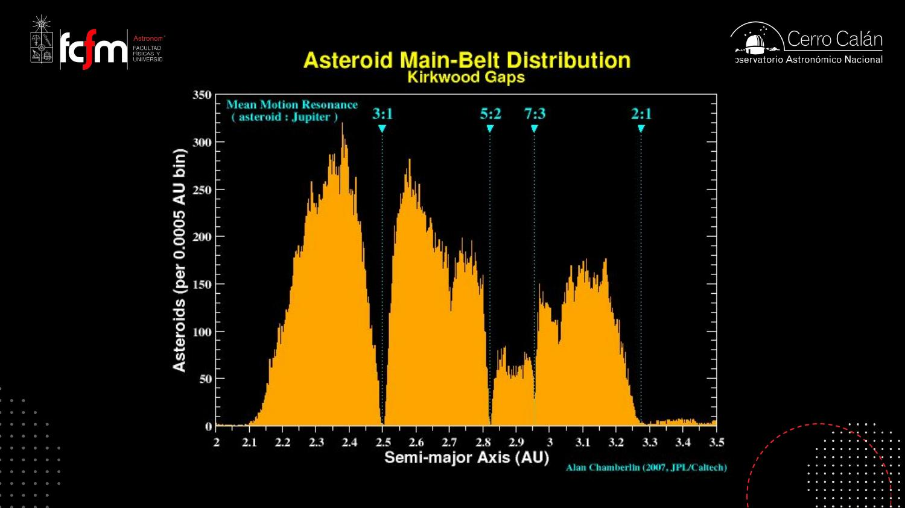
Las resonancias tienen «dos sabores»: pueden ser destructivas o constructivas. En los surcos de Kirkwood son destructivas (ausencia de asteroides). Pero también existen acumulaciones resonantes — como los troyanos, que comparten la órbita de Júpiter. Además, el cinturón de asteroides tiene familias (interno, medio, externo, troyanos…) que se distinguen tanto por rango radial como por inclinación orbital respecto al plano de la eclíptica.
Una resonancia orbital es forzamiento periódico en fase: si la perturbación llega siempre en el mismo punto de la órbita, se integra coherentemente — exactamente como empujar un columpio a su frecuencia natural, o como el aliasing: cuando la frecuencia de muestreo y la señal guardan una razón entera, los efectos no se promedian, se acumulan. Y el histograma de Kirkwood es detección de anomalías pura: los «huecos» en la densidad delatan al perturbador y sus armónicos, igual que los picos de un espectro delatan una interferencia periódica.
Exo-cinturones de Kuiper: observarlos con ALMA
El polvo milimétrico delata colisiones de planetesimales que no vemos.
Lo aprendido en casa se exporta: los exo-cinturones de Kuiper también son esculpidos por sus sistemas exoplanetarios, y su forma nos habla de los planetas que interactúan con ellos, aunque no los veamos directamente.
Por qué ALMA los puede estudiar
Regla general de instrumentación: un telescopio que opera a cierta longitud de onda es sensible a cuerpos de tamaño comparable a esa longitud de onda. ALMA opera a ~1 mm, así que ve granos de ~1 mm. Pero en un exo-cinturón de Kuiper los cuerpos dominantes son planetesimales de kilómetros. La conexión es la sección anterior: el polvo milimétrico que ALMA detecta en el continuo deriva de la cascada colisional alimentada por colisiones de planetesimales. ALMA no ve los planetesimales — ve su aserrín.
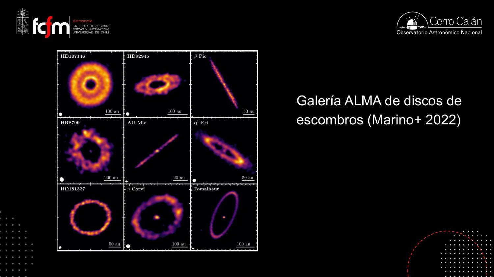
Los discos de escombros son mucho menos brillantes que los discos protoplanetarios (no tienen gas, y el polvo es escaso). Una imagen de disco con gas cuesta ~8 horas de ALMA; una de disco de escombros, 20–30 horas, y aun así salen imágenes «gruesas», de menor calidad, porque los objetos son muy débiles.
«Cada instrumento ve cuerpos del tamaño de su longitud de onda» es un filtro pasabanda: la observación muestrea una banda estrecha de la distribución de tamaños, y lo que está fuera de banda (planetesimales de km) se infiere indirectamente por el flujo que inyecta en la banda observable vía la cascada. Es como monitorear un sistema por sus logs: no ves los procesos, ves los eventos que emiten — y reconstruyes el proceso desde ahí.
β Pictoris: disco doble, planetas y un blob de CO
El primer exoplaneta en imagen directa vive dentro de un disco de escombros.
β Pictoris es el ejemplo famoso de interacción disco–planeta. Allí se detectó β Pic b, el primer exoplaneta en luz directa —según la clase, a principios de los 2000—, por Anne-Marie Lagrange, astrónoma francesa condecorada con la Legión de Honor por este resultado (el equivalente francés a un título de nobleza británico, bromeó el profesor). Fue la primera detección por imagen, no por velocidad radial.
Porque el planeta está recién formado y muy caliente: brilla con luz propia (térmica). Para poder detectarlo hubo que restar el disco de escombros de las imágenes — el planeta está metido dentro. La apuesta futura: con el ELT (en construcción en el norte de Chile) se espera detectar la luz reflejada de planetas fríos y maduros — literalmente fotografiar un planeta adulto.
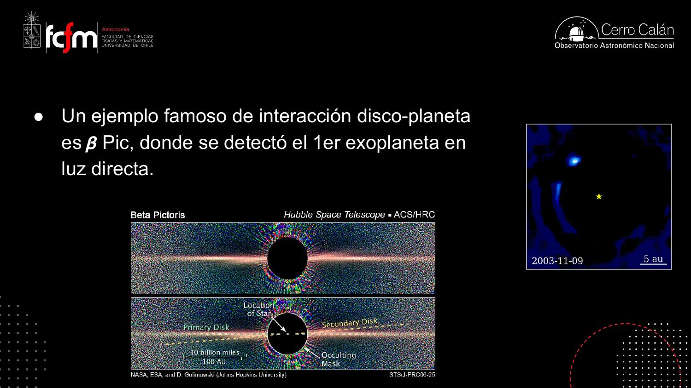
El disco secundario inclinado
β Pic tiene dos discos: el principal y uno inclinado respecto a él. La explicación: hay (al menos) dos planetas — β Pic c, interior, detectado por velocidades radiales, y β Pic b, detectado por imagen directa, cuya órbita está un poco inclinada respecto al plano del disco. La interacción de esos planetas con el mar de planetesimales genera la estructura de doble disco.
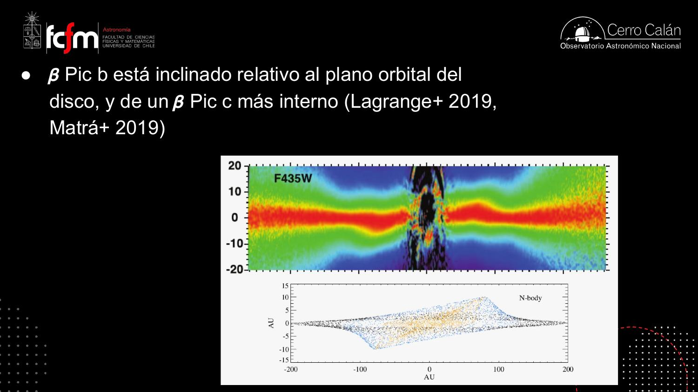
El blob de CO: una colisión captada en la nube de gas
Otra sorpresa (una de las primeras imágenes ALMA de un disco de escombros, en la que el profesor tuvo «un rol menor»): en vez de gas uniforme, se detectó un blob de CO — una concentración localizada de monóxido de carbono. La interpretación (Dent+ 2014, Science, según la diapositiva): colisiones de planetesimales en resonancia 3:2 con β Pic c. Los cálculos muestran que hay dos regiones donde las colisiones son más probables, y el blob calza con una de ellas: una colisión reciente de planetesimales que liberó gas ahí.
En el audio esta parte es confusa (se habla de «hotspot», «gas vivo» y «región caliente»). Contrastado con la diapositiva, el resultado publicado es el blob de CO(2-1) explicado por colisiones de planetesimales en resonancia 3:2 con β Pic c. El CO es aquí el trazador: al ser destruido rápidamente por la radiación, su presencia concentrada delata liberación reciente — la misma lógica del «polvo fresco» de la cascada colisional.
HR 8799 y el rompecabezas de la migración
Los anillos de escombros apuntan a los mismos planetas… que no migraron.
El otro sistema famoso: HR 8799, visto casi de cara, con cuatro planetas detectados en imagen directa. El grupo del profesor hizo observaciones ALMA con una predicción que confirmar: el exo-cinturón de Kuiper del sistema muestra un anillo con borde interno truncado — truncado por el planeta HR 8799 b (Booth+ 2016), tal como Neptuno trunca nuestro cinturón de Kuiper. La imagen no es espectacular («súper difícil de hacer»), pero el anillo es claro.
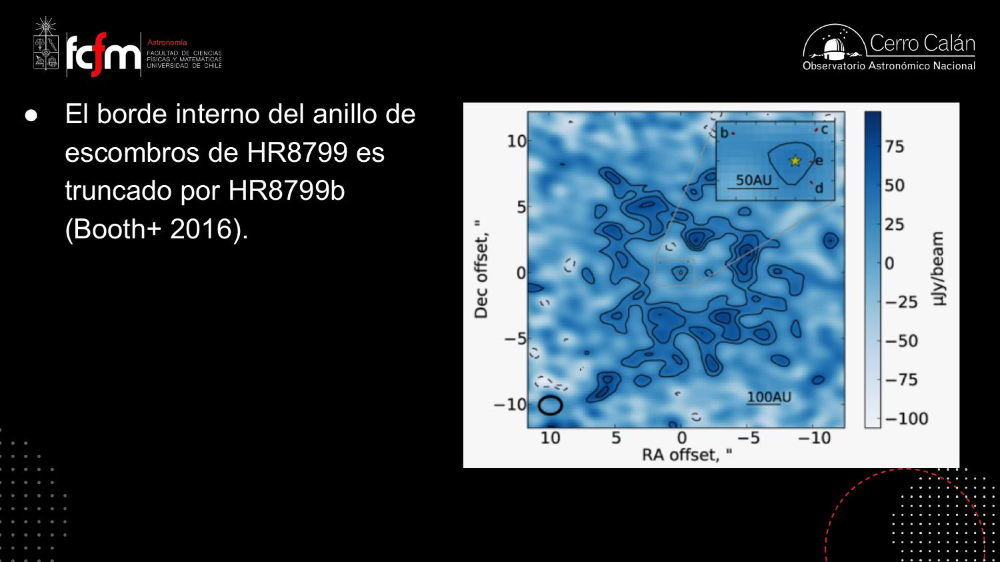
El juego de adivinar planetas por la estructura
Igual que con los discos protoplanetarios («si hay un surco grande, pon un planeta grande»), uno puede jugar a asociar un planeta a cada estructura de un disco de escombros: si veo un anillo con borde interno, ahí adentro tiene que haber un planeta, y la geometría me da su masa. Hay muchas maneras de hacerlo (distintas hipótesis y aproximaciones), y el resultado se resume en un diagrama de masa del planeta vs. radio orbital, comparando con el Sistema Solar y con la base de datos de exoplanetas.
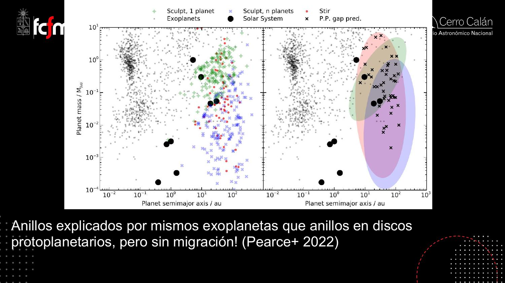
Los planetas necesarios para explicar los discos de escombros están, grosso modo, en el mismo lugar del diagrama que los necesarios para explicar los surcos protoplanetarios. Pero son etapas físicamente distintas: el disco rico en gas forma gigantes que —según la teoría de la clase pasada— migran al abrir su surco. Si hubo migración, los planetas de la etapa de escombros deberían aparecer desplazados hacia adentro… y no lo están (o muy poco). «¿No les suena raro?» — no entendemos bien la migración. Los expertos admiten que «hay cancha para hacerlo mejor»: las cruces protoplanetarias se ven algo corridas a la derecha, y si hay migración sería leve.
Esto es validación cruzada entre dos datasets independientes: el modelo (migración) predice un corrimiento sistemático entre la población «antes» (surcos con gas) y «después» (anillos de escombros). El test A/B no muestra el efecto esperado → o el modelo exagera la migración, o los estimadores de masa/posición tienen sesgos. Discrepancias así son oro: señalan exactamente dónde el modelo falla.
Crecimiento de planetas telúricos: enfocamiento, Hill y aislamiento
Los escombros son la materia prima de los planetas rocosos.
Los planetesimales del disco de escombros son el material para formar planetas telúricos (= terrestres, rocosos; el término viene del francés, aclaró el profesor). Su crecimiento continúa en la etapa de escombros, y la clave es que la gravedad hace trampa a favor del grande.
Enfocamiento gravitacional
Si dos masas no tuvieran gravedad, su probabilidad de choque estaría dada solo por su sección geométrica: hay que «achuntarle» justo. Pero con gravedad, dos cuerpos que pasarían de largo se deflectan y se acercan: la sección eficaz de colisión aumenta. Es el enfocamiento gravitacional.
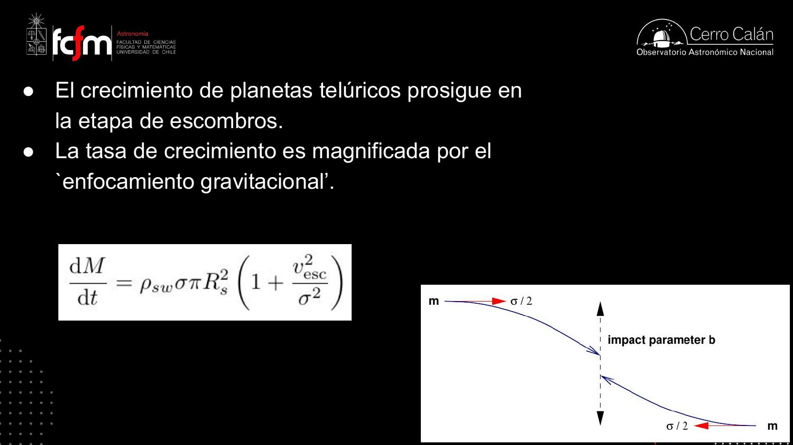
Radio de Hill y masa de aislamiento
El planeta crece devorando planetesimales hasta agotar los que están a su alcance. ¿Cuál es su alcance? El radio de Hill: la distancia dentro de la cual domina la gravedad del planeta (más lejos, manda la estrella, que es mucho más masiva).
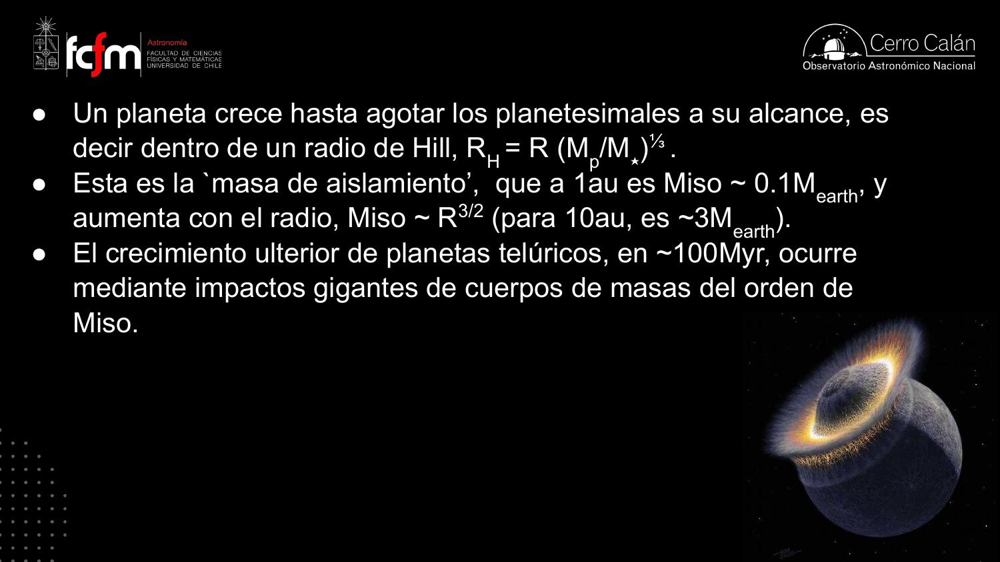
A estos cuerpos de masa de aislamiento los llamamos embriones planetarios. A 1 au son de ~0.1 masas terrestres: todavía no alcanza para una Tierra. La masa de aislamiento aumenta con la distancia — y ese detalle importa: más allá de la línea de nieve los embriones son más masivos, y con ~10 M⊕ pueden capturar una atmósfera masiva de hidrógeno y volverse gigantes gaseosos (§9).
Crecimiento oligárquico
¿Cómo parte todo? Al principio chocan granos por casualidad; pero apenas uno agarra un poquito más de masa, domina el cuento: su radio de Hill crece, su enfocamiento gravitacional crece, y se lleva todo lo que hay alrededor. Basta ganar un poquito la carrera para transformarse en el «mandamás». A esa etapa se le llama crecimiento oligárquico: los planetesimales terminan absorbidos por unos pocos oligarcas.
«Igual que la plata: cuando tienes uno que agarra un buen negocio, le va creciendo, se hace gordo y despeja todo el crecimiento alrededor… igual que el mercado, yo creo.» El que gana un poco al principio se queda con todo — en economía se le llama rich get richer.
El crecimiento oligárquico es preferential attachment: la probabilidad de capturar masa crece con la masa ya capturada (vía RH ∝ M1/3 y vesc²∝ M/R). Es el mismo mecanismo que genera distribuciones de ley de potencia en redes (nodos hub), y la masa de aislamiento es la condición de término: el proceso se detiene cuando el oligarca agota su vecindario — un algoritmo greedy que satura su región local.
Impactos gigantes y simulaciones N-cuerpos
La excentricidad es la llave: órbitas circulares no chocan.
Terminado el crecimiento oligárquico quedan puros embriones planetarios (~0.01–0.1 M⊕, decenas de ellos) y ya no hay planetesimales. ¿Cómo se llega de ahí a una Tierra? Los embriones se perturban gravitacionalmente unos a otros: sus órbitas se van deformando, alguno sale disparado, se cruza con otro… y chocan. Son los impactos gigantes, choques entre embriones que construyen masa durante ~100 millones de años. A 1 au un embrión tiene ~1/3 o menos de la masa terrestre: para hacer una Tierra hay que chocar varias veces.
Si todos los cuerpos están en órbitas circulares concéntricas, nunca se cruzan: es poco probable que choquen. Para chocar —o para salir catapultado— se necesita un encuentro cercano, y eso requiere órbitas elípticas que crucen las de los vecinos. Por eso las simulaciones muestran primero una etapa de excitación de excentricidades: es la que habilita todo lo demás.
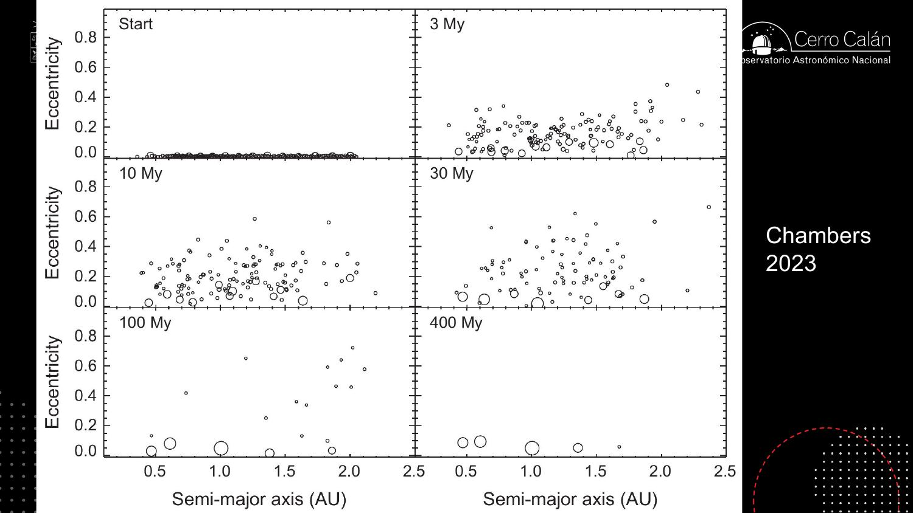
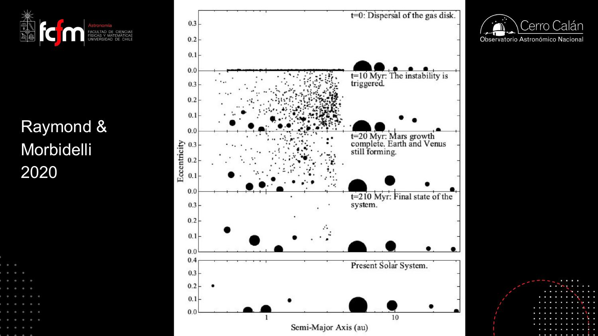
Detalle notable de las simulaciones: Marte termina de crecer antes que Venus y la Tierra — consistente con su masa pequeña. Y ninguna simulación es perfecta: son guiones plausibles, no certezas.
A propósito del caos de esta etapa salió el problema de los tres cuerpos («no lo podemos resolver; hay una serie sobre eso, está buena»). También la pregunta por el «planeta faltante» entre Marte y Júpiter (la progresión de las órbitas): en el escenario de la clase, el cinturón de asteroides no es un planeta que no se formó, sino una zona donde se acumuló el material barrido por la inestabilidad — y no es casualidad que calce con la línea de nieve, que estaba más o menos en la órbita de Júpiter.
Grand Tack, modelo de Niza y el agua de la Tierra
La migración de Júpiter y Saturno revolvió todo el Sistema Solar.
La línea de nieve
En el disco con gas hay un radio crítico: la línea de nieve, donde la temperatura iguala la de sublimación del agua. Adentro, los cuerpos están completamente secos; afuera, los planetesimales están cubiertos de mantos de hielo (agua, y también CO y CO₂). Y el hielo pega: como armar un mono de nieve, juntar pelotas de nieve es fácil. Por eso afuera de la línea de nieve el crecimiento es rápido y eficiente, los embriones llegan a ~10 M⊕ y capturan atmósferas masivas de hidrógeno: allá nacen los gigantes gaseosos.
El Grand Tack: Júpiter va y vuelve
Se forman Júpiter y Saturno, cada uno despeja su surco y —como vimos en la clase pasada— migran hacia adentro. La hipótesis del Grand Tack («la gran virada»): cuando Saturno alcanza a Júpiter, la migración se devuelve y ambos migran hacia afuera. En todo ese vaivén van perturbando el resto del disco por resonancias: sacan cuerpos de sus órbitas, hacen caer material rico en volátiles (con agua) desde afuera hacia las regiones internas secas — mezclan el disco. «Ojo: esto es una hipótesis — pero es la única» que explica varias cosas a la vez.
El modelo de Niza: la resonancia 2:1 gatilla la inestabilidad
Al migrar, los períodos orbitales de Júpiter y Saturno van cambiando, y llega un momento en que cruzan justo la resonancia 2:1 (¿recuerdan? la misma razón de períodos que marca el borde externo del cinturón de asteroides). En ese cruce su efecto gravitacional se amplifica y se genera un impacto mayúsculo en todo el Sistema Solar: es la inestabilidad del modelo de Niza. Resultados plausibles de las simulaciones: la expulsión de un tercer gigante de hielo (un hermano de Urano y Neptuno catapultado fuera del Sistema Solar), o que Urano y Neptuno intercambiaran órbitas. No son certezas — son desenlaces posibles de las simulaciones.
Esa inestabilidad produjo una lluvia de asteroides desde afuera hacia adentro: el bombardeo tardío (late heavy bombardment), que dejó los cráteres de la Luna. Y si un gigante puede salir catapultado, con mayor razón las cositas chicas: los objetos interestelares como ʻOumuamua (alargado: su brillo variaba al rotar) o los cometas interestelares posteriores son planetesimales eyectados de esta etapa en otros sistemas. Antes era una gran pregunta si existían cuerpos en órbitas hiperbólicas (todo en el Sistema Solar es elíptico o parabólico); hoy, con el observatorio Vera C. Rubin mapeando el cielo, lo lógico es que aparezcan cada vez más — y surge una pregunta nueva: ¿qué rol jugaron los objetos interestelares en la evolución del Sistema Solar y de la Tierra?
¿De dónde viene el agua de la Tierra?
La Tierra está dentro de la línea de nieve: debería estar seca. Tres teorías compiten:
- Bombardeo de asteroides/cometas (la favorita de los astrónomos): la masa de agua que trajeron los cuerpos del bombardeo tardío calza con la de los océanos.
- Procesos geológicos: los geólogos buscan mecanismos químicos internos; les cuesta aceptar que la evolución de la Tierra dependa del espacio exterior «a ese nivel».
- Atmósfera primordial de hidrógeno (paradigma reciente, «una idea muy chévere»): la prototierra habría tenido una atmósfera de H₂ que reaccionó con los silicatos de la corteza (que contienen oxígeno) formando agua. De paso, es un mecanismo para formar waterworlds, exoplanetas de pura agua.
«Como todo en la naturaleza, cuando pueden ser tres cosas, lo más probable es que sean las tres juntas.» Y un ingrediente más: para la vida no basta el agua — se necesita el material prebiótico, moléculas orgánicas complejas y delicadas que no se forman en el interior de la Tierra. Esa materia orgánica compleja viene de afuera, y llega justamente durante esta etapa de inestabilidades.
La transcripción menciona para el bombardeo tardío «alrededor de 100 millones de años… 200 millones de años» (posiblemente refiriéndose a su duración o inicio tras la formación). El pasaje de audio es ambiguo; la literatura suele ubicar el episodio varios cientos de Myr después de la formación del Sistema Solar. Se deja constancia de la ambigüedad en lugar de inventar precisión.
Theia y el origen de la Luna
El último impacto gigante de la Tierra tiene nombre propio.
La prueba más evidente de los impactos gigantes la tenemos sobre nuestras cabezas: la Luna es el resultado del último impacto gigante de la Tierra, el choque con un cuerpo del tamaño de Marte llamado Theia.
La pista isotópica
Cuando las misiones Apolo trajeron rocas lunares, se descubrió que tienen la misma composición isotópica que la Tierra. Eso es raro: en el Sistema Solar la composición isotópica varía con la distancia al Sol (Venus no es isotópicamente igual a la Tierra). Los conspiracionistas lo usan como «prueba» de que nunca fuimos a la Luna; la explicación científica es más bonita:
- En los puntos de Lagrange L4/L5 de la órbita terrestre (los mismos donde se acumulan los troyanos de Júpiter) pudo acumularse otro embrión planetario: una «hermana» de la Tierra que compitió por los mismos planetesimales, al mismo radio orbital — por eso, misma composición isotópica.
- Esos puntos son inestables a largo plazo: Theia terminó cayendo sobre la Tierra.
- El impacto pulverizó (según este guión) ambos cuerpos — el desenlace depende de las propiedades mecánicas de los cuerpos; es geofísica mezclada con astrofísica, toda un área de investigación.
- Se formó un pequeño disco de escombros alrededor de la Tierra, que se recondensó en la Luna.
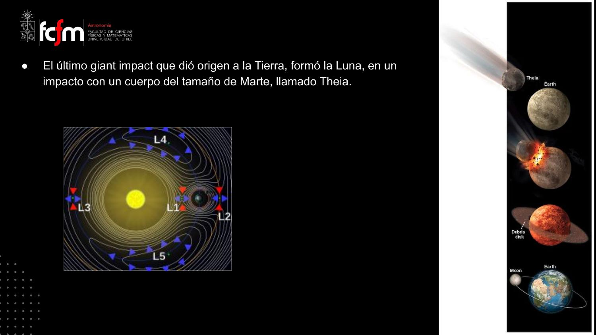
«Desde ese punto de vista genealógico, la Luna sería una hija de la Tierra.» Y sigue siendo tema de investigación activa: salen papers cada pocos meses sobre Theia y las condiciones del impacto.
La clase cerró con el resumen del crecimiento, desde 10⁴ hasta 10⁸ años: polvo submicrométrico interestelar → coagulación hasta rocas de ~cm (máximo) → inestabilidad de corriente (streaming instability: los «pelotones de ciclistas» que colapsan bajo su propia gravedad) → planetesimales → crecimiento con enfocamiento gravitacional → embriones (masa de aislamiento). Fuera de la línea de nieve: embriones de ~10 M⊕ que capturan hidrógeno → gigantes gaseosos. Dentro: embriones de ~0.1 M⊕ que crecen a golpes → impactos gigantes → planetas terrestres, con la Luna como último golpe.
Bonus: un disco circunplanetario de portada
El resultado que el profesor mostró «porque estoy chocho».
Antes de entrar en materia, el profesor compartió un resultado reciente de su grupo, publicado con su estudiante de magíster como autora y elegido para la portada de una revista de astronomía («la figura la preparé yo»). El contexto conecta con clases anteriores:
- Un protoplaneta gigante (~masa de Júpiter) dentro de un disco circunestelar despeja un surco y se espera que esté rodeado por un disco circunplanetario: un disco chiquitito en torno al planeta, no a la estrella.
- Ese disco se postula para explicar los satélites regulares del Sistema Solar (galileanos de Júpiter, saturnianos): órbitas circulares súper regulares que indican que nacieron ahí, no fueron capturados.
- El problema: las simulaciones solo producen una estructura achatada y compacta (tipo platillo) en el caso isotermal idealizado (enfriamiento perfecto); en los casos realistas sale algo gordo, una envoltura — y con eso no se explican los satélites regulares.
La observación
Con ALMA detectaron el protoplaneta a baja frecuencia pero no a alta (tres frecuencias observadas). Para explicar ese comportamiento espectral necesitaron una interpretación física: no calza con emisión de polvo — solo calza con una capa delgada de material ionizado en la superficie del disco circunplanetario, donde el material que cae choca fuerte contra una superficie firme y se ioniza. Coincidencia afortunada: un modelo teórico de 2018 (propuesto para explicar la emisión de hidrógeno de protoplanetas — en la transcripción el nombre del autor es ininteligible; «Gallo» podría corresponder a Aoyama et al. 2018, referencia dudosa) ya postulaba exactamente eso: el disco actúa como platillo colector, el material impacta su superficie, se ioniza y emite.
Es la primera confirmación de que existe esa estructura aplanada y firme — el tipo de disco circunplanetario que da origen a los satélites regulares. Indicios de «cachureo» en torno a protoplanetas ya había; la pregunta era su forma. La teoría decía «envoltura gorda»; la observación exige una superficie dura donde se produce el choque que emite la señal. «Para que sepan que hacemos cosas choras acá.»
El argumento es discriminación de modelos por firma espectral: dos hipótesis (polvo vs. capa ionizada) predicen distinta dependencia del flujo con la frecuencia; el dato (detección en baja, no-detección en alta) rechaza una y selecciona la otra. La no-detección es tan informativa como la detección — igual que en debugging, donde el test que no falla descarta hipótesis.
Material de diapositivas no cubierto en audio
Las dos clases que el profesor decidió saltarse.
El profesor tenía preparadas dos clases más —cinemática de discos y discos con geometrías extremas— que decidió comprimir: «son cosas bonitas, pero son más preguntas que respuestas; creo que es más importante hablarles de los discos de escombros y la formación del Sistema Solar». Este material existe en las diapositivas pero no fue discutido en el audio; se resume aquí solo como referencia, marcado como tal.
Cinemática de discos (diapositivas Clase 3b — no discutido en audio)
La pregunta guía: ¿se puede detectar el cambio abrupto de velocidad del gas en la vecindad de un protoplaneta? Las diapositivas muestran el «Doppler flip» en HD 100546 (Casassus+ 2022), que calza con las predicciones para un planeta de 10 MJup — pero coincide con un anillo, no con un surco («¡falta un ingrediente… quizás vientos de protoplanetas?»). Y un dato duro: un large program de ALMA concluido en 2025 no detectó ningún protoplaneta con la técnica cinemática; queda abierta una posibilidad vía el calentamiento de CO cerca de un gigante en formación (Chrenko, Casassus+ 2025).
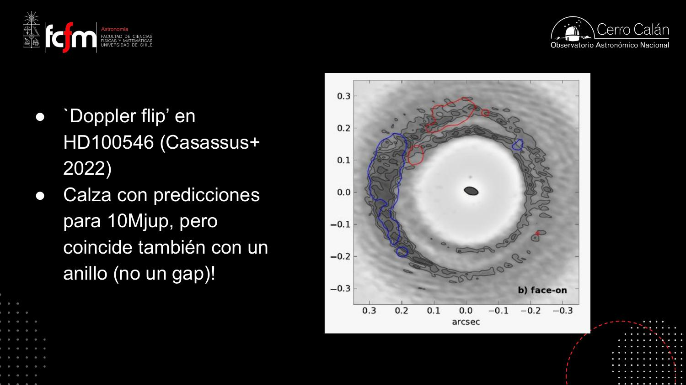
El disco rota de forma kepleriana: v ∝ r−1/2. Por efecto Doppler, cada línea espectral (p. ej. CO) mapea la velocidad proyectada — de un cubo espectral (x, y, frecuencia) se extraen mapas de momentos (intensidad integrada, velocidad media…), puro procesamiento de señal. Buscar planetas cinemáticamente es detección de anomalías: se ajusta el modelo kepleriano suave y se buscan residuos localizados — el «Doppler flip» es un residuo con estructura dipolar. El widget 1 de abajo deja jugar con el campo de velocidad proyectado.
Geometrías extremas (diapositivas Clase 4 — no discutido en audio)
Discos que se apartan del disco plano ideal: warps (alabeos) en HD 100453 (Benisty+, Min+ 2017), DoAr 44 (Casassus+ 2019), HD 143006 (Benisty+ 2018); discos con anillos internos desalineados como GW Ori (Kraus+ 2020); posibles warps primordiales en objetos Clase 0 (Sakai+ 2019; Bate 2018) — con el problema de que un warp se aplana si no hay un cuerpo masivo que lo mantenga. Y los fly-bys: encuentros entre protoestrellas que se observan como discos binarios (AS 205, SR 24, FU Ori), sin poder distinguir hoy si son sistemas ligados o desligados.
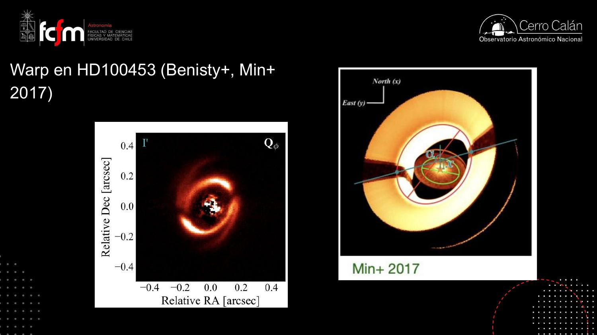
Explorar conceptos
Tres widgets para jugar con las ideas de la clase.
Conceptos clave
Tabla de repaso rápido.
| Concepto | Qué es / valor | Por qué importa |
|---|---|---|
| Fotoevaporación | La radiación UV estelar calienta el gas sobre la velocidad de escape | Disipa el disco; la barrida final es casi instantánea vs. la vida del disco |
| Disco de escombros | Disco sin gas: solo granos >1 mm, planetesimales y planetas | La etapa donde se terminan de formar los planetas rocosos |
| Presión de radiación | Los fotones llevan momentum y empujan los granos pequeños | Barre el polvo fino: el que se observa debe ser fresco |
| Cascada colisional | Colisiones de planetesimales que muelen rocas en granos | Produce el polvo mm que ALMA detecta en exo-cinturones |
| Surcos de Kirkwood | Vacíos del cinturón de asteroides en resonancias con Júpiter (3:1, 5:2, 7:3, 2:1) | La arquitectura de un cinturón delata a sus planetas |
| Exo-cinturones de Kuiper | Discos de escombros en otros sistemas (β Pic, HR 8799, Fomalhaut…) | Su forma (bordes, anillos) permite inferir exoplanetas no vistos |
| β Pictoris | Primer exoplaneta en imagen directa (Lagrange); disco doble; blob de CO | Laboratorio de interacción disco–planeta |
| Puzzle de migración | Planetas inferidos de escombros ≈ mismo lugar que los de surcos con gas (Pearce+ 2022) | La migración esperada no se ve: no la entendemos bien |
| Enfocamiento gravitacional | Factor (1 + v²esc/σ²) en la tasa de crecimiento | Acelera la acreción de planetesimales: el grande crece más rápido |
| Radio de Hill | RH = R(Mp/M★)1/3: donde domina la gravedad del planeta | Define el «alcance» del embrión y su surco de alimentación |
| Masa de aislamiento | ~0.1 M⊕ a 1 au; crece como R3/2 (~3 M⊕ a 10 au) | Tope del crecimiento oligárquico: nacen los embriones planetarios |
| Crecimiento oligárquico | El que gana un poco de masa domina y absorbe su vecindario | De un mar de planetesimales a unas decenas de embriones |
| Impactos gigantes | Choques entre embriones durante ~100 Myr; requieren excentricidad | Construyen los planetas terrestres; el último formó la Luna |
| Línea de nieve | Radio donde T = sublimación del agua; adentro seco, afuera hielos | Divide gigantes (afuera) de telúricos (adentro); ~órbita de Júpiter |
| Grand Tack | Júpiter migra hacia adentro y «vira» hacia afuera al llegar Saturno | Mezcla el disco: lleva volátiles (agua) a las regiones secas |
| Modelo de Niza | Inestabilidad cuando Júpiter y Saturno cruzan la resonancia 2:1 | Bombardeo tardío, posible tercer gigante de hielo eyectado |
| Theia | Embrión tamaño Marte formado en L4/L5 de la órbita terrestre | Su impacto formó la Luna; explica la composición isotópica idéntica |
| Disco circunplanetario | Disco chico en torno a un protoplaneta; postulado para los satélites regulares | Resultado del grupo: primera evidencia de superficie firme (capa ionizada por choque) |
Exámenes de práctica
10 exámenes de 5 preguntas (3 de alternativas autocorregibles + 2 de respuesta escrita).
- Examen 01Fotoevaporación y fin del gas
- Examen 02Presión de radiación y cascada
- Examen 03Cinturones y resonancias
- Examen 04Exo-cinturones y ALMA
- Examen 05β Pictoris
- Examen 06HR 8799 y migración
- Examen 07Crecimiento telúrico
- Examen 08Impactos gigantes
- Examen 09Grand Tack, Niza y el agua
- Examen 10Integrador